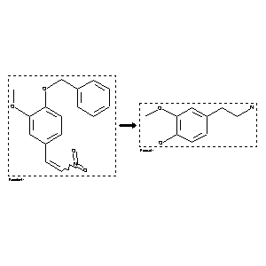

 |
| FA | RX(1); FLST(1); RX(2) |
Reaction (1 of 1)
| Reaction ID | 314228 |
| Reactant BRN | 2060878 |
| Reactant | 4-benzyloxy-3-methoxy-b-nitro-styrene |
| Product BRN | 2209832 |
| Product | 4-(2-amino-ethyl)-2-methoxy-phenol |
| No. of Reaction Details | 2 |
Reaction Details (1 of 1)
| Reaction Classification | Preparation |
| Reagent | palladium/charcoal; ethanol |
| Other Conditions | Hydrogenation.unter Zusatz von wenig konz.wss.HCl |
| Comment | Handbook |
| Citation Pointer | 1646582; Journal; Axelrod et al.; JBCHA3; J.Biol.Chem.; 233; 1958; 697; |
Reaction Details (2 of 1)
| Reaction Classification | Preparation |
| Reagent | formic acid |
| Catalyst | Pd black |
| Solvent | ethanol |
| Time | 5 hour(s) |
| Temperature | 18 - 20 |
| Citation Pointer | 5715571; Journal; Kulikov, S. V.; Samartsev, M. A.; JOCYA9; J.Org.Chem.USSR (Engl.Transl.); EN; 28; 2.2; 1992; 280-288; ZORKAE; Zh.Org.Khim.; RU; 28; 2; 1992; 348-358; |
Reference (1 of 2)
| Citation Number | 1646582 |
| Document Type | Journal |
| Authors | Axelrod et al. |
| CODEN | JBCHA3 |
| Journal Title | J.Biol.Chem. |
| (Series) Volume | 233 |
| Publication Year | 1958 |
| Page | 697 |
Reference (2 of 2)
| Citation Number | 5715571 |
| Document Type | Journal |
| Authors | Kulikov, S. V.; Samartsev, M. A. |
| CODEN | JOCYA9; ZORKAE |
| Journal Title | J.Org.Chem.USSR (Engl.Transl.); Zh.Org.Khim. |
| Language Code | EN; RU |
| (Series) Volume | 28; 28 |
| Number | 2.2; 2 |
| Publication Year | 1992; 1992 |
| Page | 280-288; 348-358 |